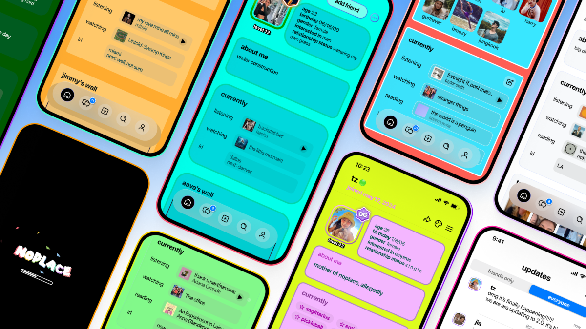
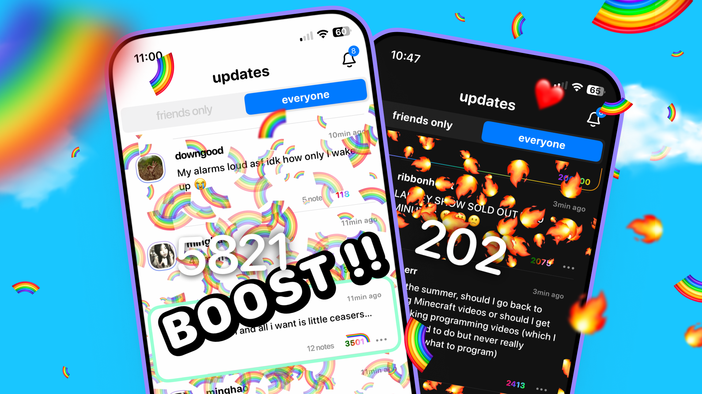
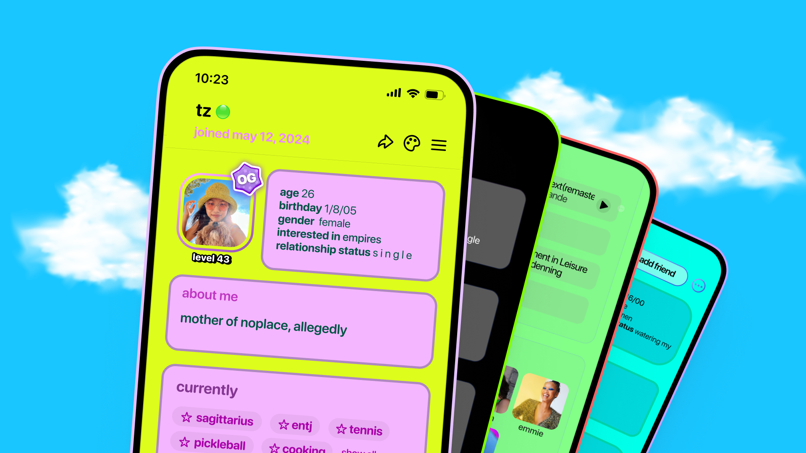
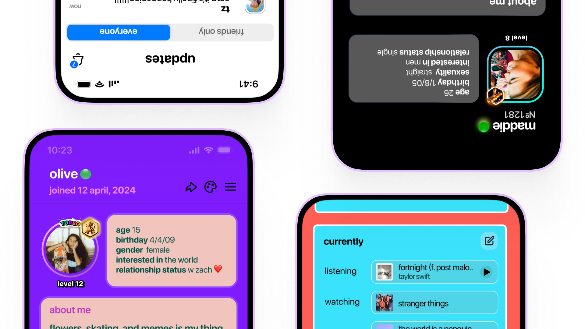

7th July 2024 — 20 min read
New Youth Network
Image Credits: noplace
Aiming to bring the “social” back to “social media,” a new app called
noplace
has surged to the top of the App Store as it launched out of invite-only
mode on Wednesday. Designed to appeal to a younger crowd — or anyone who
wants to connect with friends or around shared interests — noplace is
like a modern-day Myspace. With its colorful, customizable profiles,
users can share everything from relationship status to what they’re
listening to or watching, what they’re reading or doing, and more.
The app's viral success ahead of its public launch bodes well for its
potential in the often-difficult consumer social market. Noplace's
standout feature allows users to express themselves by customizing the
colors of their profiles, a nostalgic nod to the chaotic customizations
of Myspace. Although Gen Z may not have grown up with Myspace, there's
an undeniable appeal in experiencing a social networking platform that
emphasizes creativity and personalization over uniformity.
“I think that part of the magical, fun part of the internet is gone now.
Everything is very uniform,” says founder and CEO
Tiffany Zhong. Previously, Zhong founded her own early-stage consumer fund,
Pineapple Capital, and,
in her teens, worked at Binary Capital, helping source early-stage consumer deals.
With noplace, Zhong aims to revive that lost sense of individuality and
fun, providing a platform where users can truly express themselves and
connect over shared interests in a vibrant, personalized space.
Image Credits: noplace
In the ever-evolving landscape of social apps, Zhong has consistently
demonstrated a knack for spotting trends. From predicting Musical.ly's
rise in 2015 to foreseeing shifts in user behavior, her insights into
what resonates with younger audiences are unparalleled.
She also often
tweeted
her product insights and analysis, particularly about consumer apps,
gaining her a following on social media. Given her background, it’s no
surprise that Zhong has well-developed ideas about what might appeal to
today’s younger users in a new social networking app.
"I've always loved social," Zhong reflects. "But nowadays, social media
feels less about connection and more about consuming content. It's
become disconnected."
This disconnect, she believes, stems from the hyper-personalization of
content. "We're all consuming different things based on our interests,
which makes finding a true community challenging."
Enter noplace, Zhong's latest venture aiming to bridge this gap. Unlike
traditional platforms, noplace isn't just about personal feeds—it's
about fostering genuine connections based on shared interests.
At its core, noplace offers a streamlined, customizable profile where
users can share real-time updates and curate their interests using tags
known as "stars." Whether it's their astrology sign, Myers-Briggs type,
hobbies, or fandoms, these stars help users discover like-minded
individuals in a single space.
Think of noplace as a global group chat meets Twitter, emphasizing
text-based updates over photos and videos. It's a deliberate choice to
prioritize meaningful conversations and shared interests over passive
consumption.
And reminiscent of early social networks like Myspace, noplace features
a "top 10 friends" section, putting emphasis on personal connections
rather than popularity metrics.
In a landscape dominated by visual content, noplace dares to redefine
what it means to be social. It's not just about scrolling through feeds;
it's about engaging, connecting, and discovering new perspectives—all in
one place.
As Zhong puts it, "noplace isn't just another app. It's a
community-driven platform designed to bring people closer together
through shared passions and conversations. It's time social media got
social again."
With Zhong's track record and noplace's innovative approach, it's clear
that the future of social networking might just be a lot more
personal—and a lot less about the media.
Image Credits: noplace
"Facebook, back when I used it in middle school about ten years ago, was
all about sharing cool updates about life," Zhong reminisces. "We don't
quite have that anymore, do we? You can follow friends on Instagram, but
it's mostly highlights, not frequent updates."
On noplace, the focus is on sharing current activities rather than past
events. Whether exploring a new city, watching a show, or discovering a
new band, these become your status updates. The app features two feeds:
one with updates from your friends and another showcasing global updates
from all users, both presented in reverse chronological order. There are
no private profiles, fostering a more open and connected experience.
For users under 18, noplace provides a moderated feed to ensure a safer
environment. The company has developed an internal moderation dashboard
and assigned a dedicated team to uphold safety standards.
"With noplace, we're bringing back the essence of real-time sharing and
genuine connection," Zhong explains. "It's about staying current with
what your friends are up to and discovering shared interests with others
around the world. We're committed to creating a space where everyone can
feel safe and engaged."
This approach not only echoes the simplicity and authenticity of early
social platforms but also addresses the evolving needs of today's
digital landscape.
Image Credits: noplace
Instead of algorithms, noplace leverages AI technology to drive
suggestions and curation. The app doesn’t edit the feed for you, but
rather uses AI to do things like offering summaries of what you’ve
missed.
“We did that intentionally … having a global, public feed is
what makes it so fun. It’s like everyone’s brain on paper,” Zhong notes.
“People have a blast. They’re like, ‘I’ve never had an app like this
before.”
The Tokyo- and San Francisco-based founder first started
working on noplace during the second half of last year along with a
remotely distributed full-time team of seven. Late last year, noplace
launched into an invite-only beta phase and “accidentally went viral,”
Zhong says, prompting the team to distribute some invite codes to early
adopters, which included some K-pop fans.
The app is now poised to offer
younger Twitter users an alternative to the network now known as X under
Elon Musk, and offers the same ability to post to a text-based feed, but
combines that with friend-finding features and customization options
that appeal to their demographic.
The app is a free download on iOS and
is available in read-only mode on the web. Monetization plans are not
yet underway. noplace competes with other friend-finding apps targeting
Gen Z, like Wizz, Yubo, purp, LMK and others.
The startup is backed by
funding from investors including 776 (Alexis Ohanian), Forerunner
Ventures and others. According to PitchBook data, the company raised $15
million in a Series A1 round, at a pre-money valuation of $75 million,
bringing its total raise to north of $19 million.